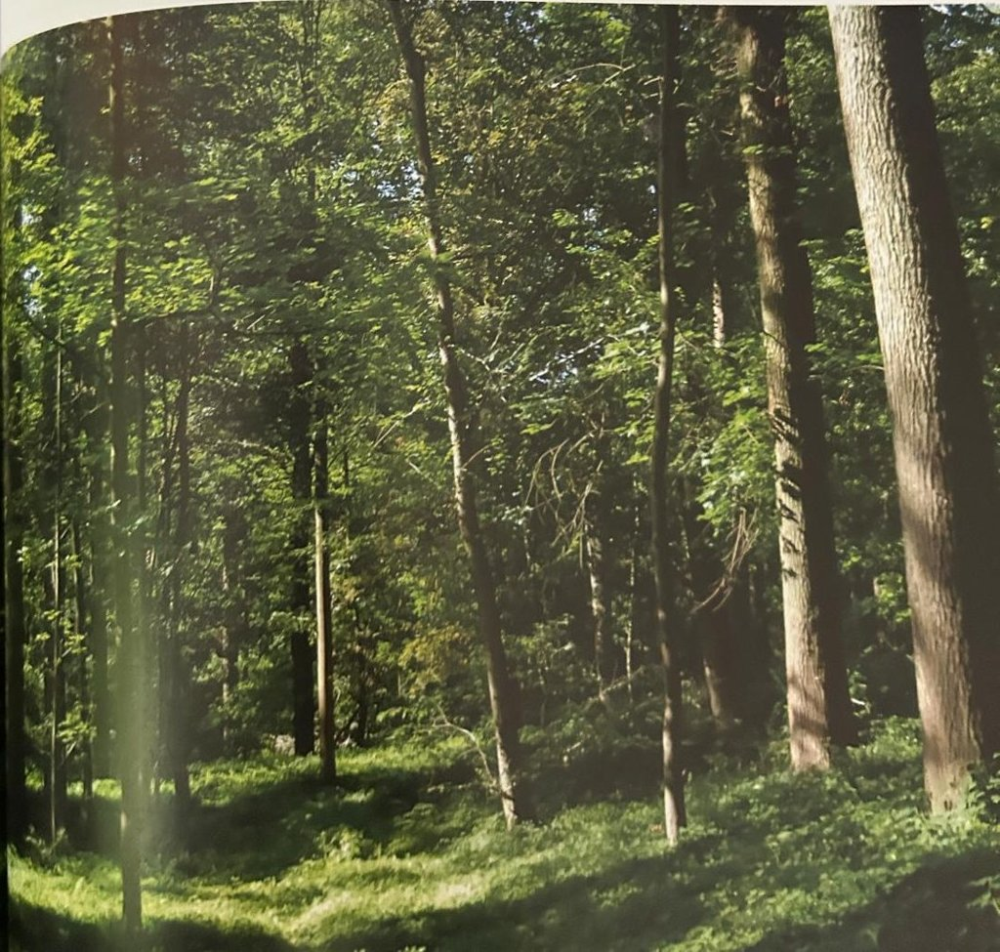

Groepen › Oude Wereld
24. België, Atlantisch loofbosgebied

Arboretumgroep 24 was oorspronkelijk bedoeld om de bossen van de Baltische regio weer te geven, maar is eigenlijk nooit echt ontwikkeld. Hier staat nog het oorspronkelijke Zomereikenbos, recent zijn daarin jongere aangeplante Amerikaanse eiken verwijderd. Zo staat er een goede basis om, als tegenhanger van het continentale Europese bos in Groep 22, een beeld te vormen van het West-Europese Atlantische Beukenbos en het Eiken-Haagbeukenbos, beide climax-bostypes die in Vlaams-Brabant helemaal thuis zijn. In dit mengbos wordt nog een hele keur aan inheemse boomsoorten bij geplant.
Uit het boek
2,50 ha · weerstation Ukkel
- Ons eigen Atlantische loofbos: beuk, eik, haagbeuk en hazelaar. Vlak naast het arboretum ligt Jezus-Eik.

Bron: Geografisch Arboretum Tervuren. Een wereldreis rond bomen (2020), p. 200 en volgende.
Deelgroepen
- 24 – Oost-Duitsland
Soorten in deze groep (3)
Tekst en foto: arboretum-tervuren.be (Koninklijke Schenking), met toestemming gebruikt.